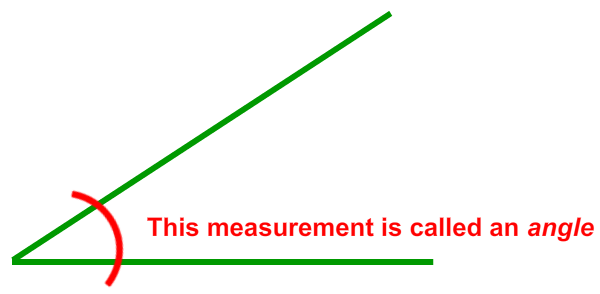

There are many ways to organize and explore 2D and 3D shapes. In this challenge, you measured the height, width, and depth of your shapes. You can also measure the angles between the edges or sides of shapes.
To do this you need a protractor. Download a protractor.
To learn more about angles, check out the Zometool Express Challenge: What’s Your Angle.
Here are more shapes to build with Zometool.
Can you make 2D and 3D versions of these shapes?